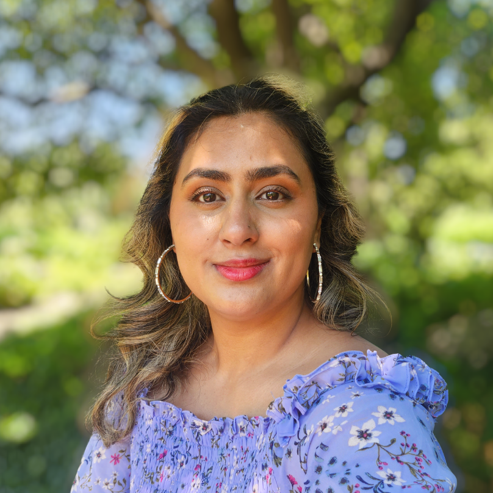

Rashina Fuentes
Web Developer
Diligent and motivated aspiring web developer with a strong foundation in programming and a passion for creating dynamic and visually appealing websites. Eager to contribute technical expertise and creativity to a dynamic team, while continuously expanding skills in front-end and back-end development to deliver high-quality user experiences.
Education
2012 High School Diploma - Willowbrook High School
Work Experience
- Nov 2022 - Jul 2023 Administrative Assistant @ IMANA
- Traveling administrative assistant responsible for managing various administrative tasks
- Managing donors, maintaining relationships, and effectively communicating organization news
- Hosted events for specific specialties, ensuring seamless execution and effective stakeholder communication
- Mar 2019 - Oct 2022 Insurance Agent @ Allstate - Worry Free Agency
- Demonstrated expertise in sales techniques and customer acquisition, providing comprehensive insurance consultations and building strong client relationships
- Created systems in the agency to streamline work flow and increase employee efficiency and productivity
- Aug 2015 - May 2019 Site Director @ Knowledge Universe (Champions)
- Implemented standards and routines for before and after school program
- Organized engaging events that involved parents and schools, resulting in increased parent satisfaction and enhanced collaboration
Skills
- Communication & Collaboration
- Excellent Research Skills
- Learning & Adaptability
- Typing & Computer Proficency
- Programing Languages: